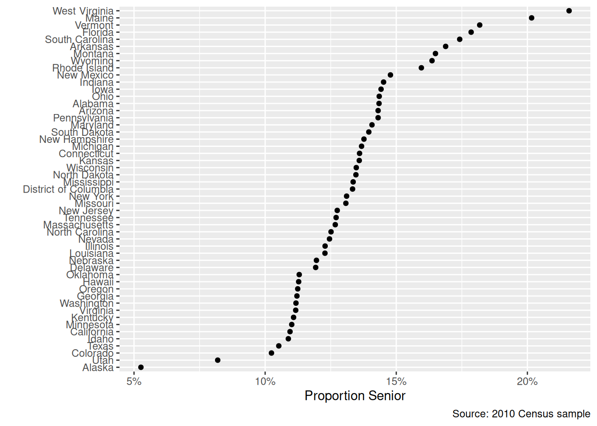

library(dplyr)
library(readr)
library(ggplot2)
library(ggrepel)
library(forcats)
library(scales)Suggested Programming Solutions
Chapter 10 Visualization: Visualization
1 State Proportions
cen10 <- readRDS("data/input/usc2010_001percent.Rds")Group by state, noting that the mean of a set of logicals is a mean of 1s (TRUE) and 0s (FALSE).
grp_st <- cen10 %>%
group_by(state) %>%
summarize(prop = mean(age >= 65)) %>%
arrange(prop) %>%
mutate(state = as_factor(state))Plot points
ggplot(grp_st, aes(x = state, y = prop)) +
geom_point() +
coord_flip() +
scale_y_continuous(labels = percent_format(accuracy = 1)) + # use the scales package to format percentages
labs(
y = "Proportion Senior",
x = "",
caption = "Source: 2010 Census sample"
)
2 Swing Justice
justices <- read_csv("data/input/justices_court-median.csv")Keep justices who are in the dataset in 2016,
in_2017 <- justices %>%
filter(term >= 2016) %>%
distinct(justice) %>% # unique values
mutate(present_2016 = 1) # keep an indicator to distinguish from rest after merge
df_indicator <- justices %>%
left_join(in_2017)Joining with `by = join_by(justice)`All together
ggplot(df_indicator, aes(x = term, y = idealpt, group = justice_id)) +
geom_line(aes(y = median_idealpt), color = "red", size = 2, alpha = 0.1) +
geom_line(alpha = 0.5) +
geom_line(data = filter(df_indicator, !is.na(present_2016))) +
geom_point(data = filter(df_indicator, !is.na(present_2016), term == 2018)) +
geom_text_repel(
data = filter(df_indicator, term == 2016), aes(label = justice),
nudge_x = 10,
direction = "y"
) + # labels nudged and vertical
scale_x_continuous(breaks = seq(1940, 2020, 10), limits = c(1937, 2020)) + # axis breaks
scale_y_continuous(limits = c(-5, 5)) + # axis limits
labs(
x = "SCOTUS Term",
y = "Estimated Martin-Quinn Ideal Point",
caption = "Outliers capped at -5 to 5. Red lines indicate median justice. Current justices of the 2017 Court in black."
) +
theme_bw()Warning: Using `size` aesthetic for lines was deprecated in ggplot2 3.4.0.
ℹ Please use `linewidth` instead.Warning: Removed 19 rows containing missing values or values outside the scale range
(`geom_line()`).Warning: Removed 9 rows containing missing values or values outside the scale range
(`geom_text_repel()`).Chapter 9 Objects, Functions, Loops: Objects and Loops
cen10 <- read_csv("data/input/usc2010_001percent.csv")
sample_acs <- read_csv("data/input/acs2015_1percent.csv")Checkpoint #3
cen10 %>%
group_by(state) %>%
summarise(avg_age = mean(age)) %>%
arrange(desc(avg_age)) %>%
slice(1:10)# A tibble: 10 × 2
state avg_age
<chr> <dbl>
1 West Virginia 44.1
2 Maine 42.1
3 Florida 41.3
4 New Hampshire 41.2
5 North Dakota 41.1
6 Montana 40.6
7 Vermont 40.3
8 Connecticut 40.1
9 Wisconsin 39.9
10 New Mexico 39.3Exercise 2
states_of_interest <- c("California", "Massachusetts", "New Hampshire", "Washington")
for (state_i in states_of_interest) {
state_subset <- cen10 %>% filter(state == state_i)
print(state_i)
print(table(state_subset$race, state_subset$sex))
}[1] "California"
Female Male
American Indian or Alaska Native 21 21
Black/Negro 127 126
Chinese 76 65
Japanese 15 12
Other Asian or Pacific Islander 182 177
Other race, nec 283 302
Three or more major races 7 7
Two major races 91 83
White 1085 1083
[1] "Massachusetts"
Female Male
American Indian or Alaska Native 4 1
Black/Negro 21 17
Chinese 8 7
Japanese 1 1
Other Asian or Pacific Islander 14 14
Other race, nec 9 17
Two major races 10 8
White 272 243
[1] "New Hampshire"
Female Male
American Indian or Alaska Native 1 0
Black/Negro 0 1
Chinese 0 1
Japanese 1 0
Other Asian or Pacific Islander 2 1
Other race, nec 1 0
Two major races 0 1
White 66 63
[1] "Washington"
Female Male
American Indian or Alaska Native 9 5
Black/Negro 11 9
Chinese 2 7
Japanese 4 0
Other Asian or Pacific Islander 28 18
Other race, nec 19 18
Three or more major races 0 2
Two major races 17 16
White 267 257Exercise 3
race_d <- c()
state_d <- c()
proportion_d <- c()
answer <- data.frame(race_d, state_d, proportion_d)Then
for (state in states_of_interest) {
for (race in unique(cen10$race)) {
race_state_num <- nrow(cen10[cen10$race == race & cen10$state == state, ])
state_pop <- nrow(cen10[cen10$state == state, ])
race_perc <- round(100 * (race_state_num / (state_pop)), digits = 2)
line <- data.frame(race_d = race, state_d = state, proportion_d = race_perc)
answer <- rbind(answer, line)
}
}Chapter 11 Joins and Merges, Wide and Long: Demoratic Peace Project
Task 1: Data Input and Standardization
mid_b <- read_csv("data/input/MIDB_4.2.csv")
polity <- read_excel("data/input/p4v2017.xls")Task 2: Data Merging
mid_y_by_y <- data_frame(ccode = numeric(),
year = numeric(),
dispute = numeric())
colnames(mid_b)
for(i in 1:nrow(mid_b)) {
x <- data_frame(ccode = mid_b$ccode[i], ## row i's country
year = mid_b$styear[i]:mid_b$endyear[i], ## sequence of years for dispute in row i
dispute = 1)## there was a dispute
mid_y_by_y <- rbind(mid_y_by_y, x)
}
merged_mid_polity <- left_join(polity,
distinct(mid_y_by_y),
by = c("ccode", "year"))Task 3: Tabulations and Visualization
#don't include the -88, -77, -66 values in calculating the mean of polity
mean_polity_by_year <- merged_mid_polity %>% group_by(year) %>% summarise(mean_polity = mean(polity[which(polity <11 & polity > -11)]))
mean_polity_by_year_ordered <- arrange(mean_polity_by_year, year)
mean_polity_by_year_mid <- merged_mid_polity %>% group_by(year, dispute) %>% summarise(mean_polity_mid = mean(polity[which(polity <11 & polity > -11)]))
mean_polity_by_year_mid_ordered <- arrange(mean_polity_by_year_mid, year)
mean_polity_no_mid <- mean_polity_by_year_mid_ordered %>% filter(dispute == 0)
mean_polity_yes_mid <- mean_polity_by_year_mid_ordered %>% filter(dispute == 1)
answer <- ggplot(data = mean_polity_by_year_ordered, aes(x = year, y = mean_polity)) +
geom_line() +
labs(y = "Mean Polity Score",
x = "") +
geom_vline(xintercept = c(1914, 1929, 1939, 1989, 2008), linetype = "dashed")
answer + geom_line(data =mean_polity_no_mid, aes(x = year, y = mean_polity_mid), col = "indianred") + geom_line(data =mean_polity_yes_mid, aes(x = year, y = mean_polity_mid), col = "dodgerblue")Chapter 12 Simulation: Simulation
Census Sampling
pop <- read_csv("data/input/usc2010_001percent.csv")Rows: 30871 Columns: 4
── Column specification ────────────────────────────────────────────────────────
Delimiter: ","
chr (3): state, sex, race
dbl (1): age
ℹ Use `spec()` to retrieve the full column specification for this data.
ℹ Specify the column types or set `show_col_types = FALSE` to quiet this message.mean(pop$race != "White")[1] 0.2806517set.seed(1669482)
samp <- sample_n(pop, 100)
mean(samp$race != "White")[1] 0.22ests <- c()
set.seed(1669482)
for (i in 1:20) {
samp <- sample_n(pop, 100)
ests[i] <- mean(samp$race != "White")
}
mean(ests)pop_with_prop <- mutate(pop, propensity = ifelse(race != "White", 0.9, 1))ests <- c()
set.seed(1669482)
for (i in 1:20) {
samp <- sample_n(pop_with_prop, 100, weight = propensity)
ests[i] <- mean(samp$race != "White")
}
mean(ests)ests <- c()
set.seed(1669482)
for (i in 1:20) {
samp <- sample_n(pop_with_prop, 10000, weight = propensity)
ests[i] <- mean(samp$race != "White")
}
mean(ests)